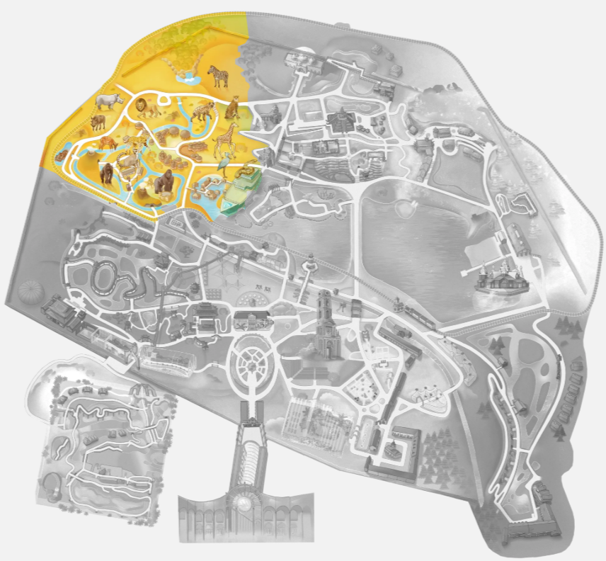

Les terres des origines

On entre ici sur le continent africain, dans un décor inspiré de l’art africain et de l’architecture africaine traditionnelle.
Le village lacustre
C'est un village sur pilotis authentique comme on en voit en Afrique le l'Ouest. On y trouve des cases de différents métiers (coiffeur, marchand, pêcheur...) et même une école. Il y a de nombreux trésors d'art populaire et artisanat africain.
Le village Tamberna
Ces cases sont inspirées d'un village du Togo, de l'ethnie Tamberna. Le village original est inscrit au patrimoine de l'UNESCO. Chaque jeune homme se mariant doit se construire sa maison traditionnelle, aidé en cela par tout le village, dans un endroit approuvé par les esprits.
Les murs sont en banco, un mélange de terre, de gravier, de glaise et d’eau qui est façonné en gros boudins superposés, renforcé de poteaux.
L'île aux lémuriens de Nosy Komba
On peut assister à leur nourrissage à 11h.
Les lémuriens sont généralement des animaux noctures, mais pas le Maki katta.
Ils ressemblent à des petits singes mais les lémuriens sont en fait une race plus primitive. Les lémuriens se distinguent par leur museau humide (comme les chiens), leurs dents en forme de peigne pour le toilettage, et vivent à l'état sauvage exclusivement à Madagascar.
Ils sont petits (en moyenne 60cm), légers (poids moyen 3kg) et dotés de grands yeux globuleux. Ils ont une longue queue à stries noir et blanc comme des anneaux alternés. Contrairement aux autres singes, elle ne sert pas à grimper aux arbres, mais juste à garder l'équilibre dans les arbres. Son pelage est gris sur le dos, blanc sur le ventre et sa face est blanche avec un museau noir. Sa fourrure est incroyablement dense, douce et soyeuse sous la main. Sa paume de main ressemble à du caoutchouc souple et un peu collant.
Très bavards, ils communiquent en émettant des miaulements clairs, des petits cris d'alerte très aigus et secs, ainsi que des ronronnements.
Pour régler les conflits sans se blesser, les lémuriens mâles font des "combats d'odeurs". Ils frottent leur longue queue contre des glandes odorantes situées sur leurs poignets, puis agitent leur queue parfumée sous le nez de leur rival jusqu'à ce que l'un d'eux abandonne.
Bec-en-sabot du Nil
Les becs-en-sabot du Nil sont visibles à Pairi Daiza entre mi-mai et septembre, entre le village sur pilotis et l'entrée du bateau Vivarium.
C’est un animal qu’on voit rarement en captivité : Pairi Daiza a été le premier parc au monde à avoir obtenu, en 2008, l’éclosion de deux oisillons.
Oiseau géant d'un mètre quarante de haut. Son bec est une immense boîte osseuse, large et bombée. Tout son corps est gris et son bec est jaune/rose. Son bec est dur comme de la pierre et possède exactement la forme d'une grosse sabot en bois terminé par un bout crochu.
Il ne chante pas. Pour communiquer, il claque violemment les deux parties de son bec l'une contre l'autre, ce qui produit un bruit de mitraillette ou de morceaux de bois lourd qui s'entrechoquent.
Le bec-en-sabot du Nil peut rester totalement immobile, les yeux fixés au sol, pendant plus de deux heures d'affilée en attendant qu'un poisson remonte à la surface avant de déclencher une attaque foudroyante.
Autres animaux de ce monde
On trouve aussi dans ce monde des singes Colobes Guéréza, des gorilles, des hippopotames, des antilopes, des phacochères, des rhinocéros, des servaux, des lions, des hyènes, des girafes, des vaches watusis, des guépards, des zèbres, des buffles, des impalas.